thread即为线程,但是在lua中是没有线程的概念的,这个线程并不是真正意义上操作系统的线程,而更多的是一个能储存运行状态的数据结构,这个结构更多的是给协程coroutine使用的
线程和协程的区别
- 线程消耗操作系统资源,协程可以靠编译语言实现,因此称为用户态线程量级更轻
- 线程并行,协程并发
- 线程同步,协程异步
- 线程抢占式,协程非抢占式,需要手动切换
- 线程上千,协程上万
- 线程切换需要上下文切换,协程切换不需要上下文切换,只在用户态进行切换
文字太枯燥,我们下面用几张图示来区别下进程,线程,协程的区别
内存布局
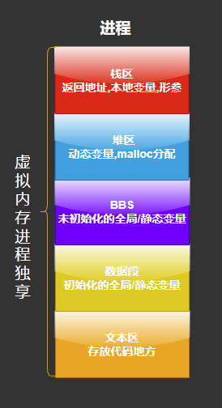
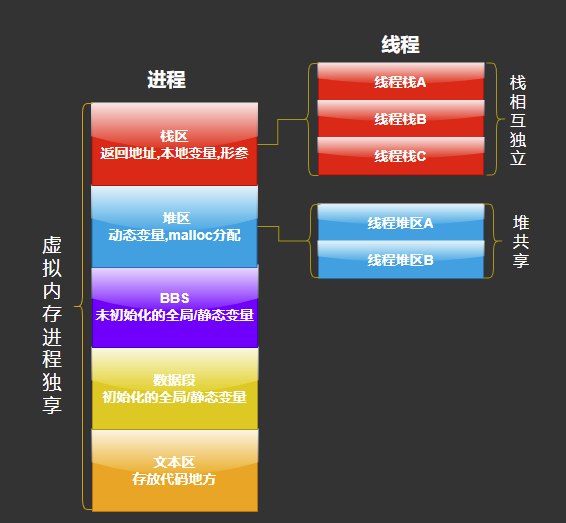
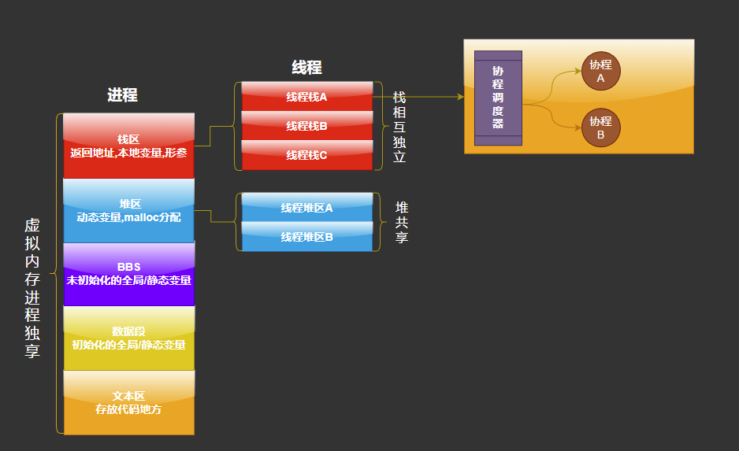
从上面3张图,我们可以分析出
- 进程拥有自己单独的虚拟内存,堆区,栈区,相互不影响,是资源分配的最小单位
- 线程可以拥有不同栈区,相互独立,堆区共享,是
CPU分配的最小单位 - 而因为线程
CPU上下文的切换,耗费的时间很多,所以牛B的工程师又在此基础上创造了协程,所以我们可以看出协程是用户态的,不需要进行CPU的切换,只是在CPU上模拟了线程的操作逻辑,大大的提高了效率
存储协程数据的数据结构
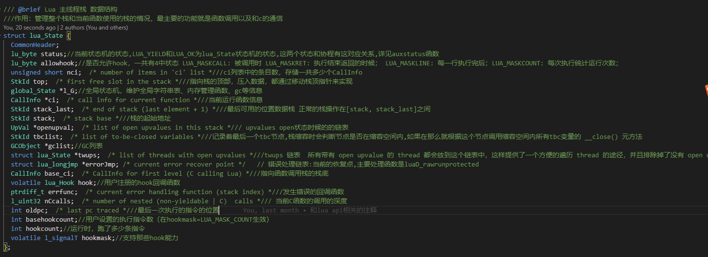
协程的四种状态
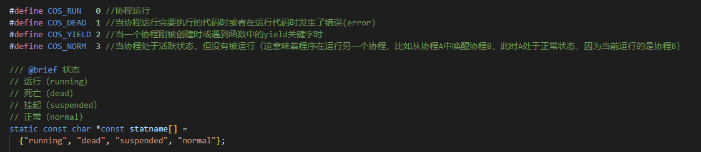
协程库对外接口
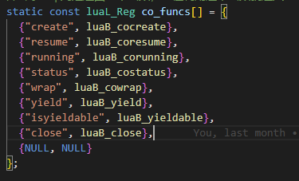
下面我们通过一个例子来解释这些接口的含义
创建协程
相同点
coroutine.create(f)和coroutine.wrap(f)都是用来创建协同程序的
不同点
-
不同的是
coroutine.create(f)返回的是一个线程号(一个协同程序就是一个线程),并且创建的协同程序处于suspend状态,必须用resume唤醒协同程序执行,执行完之后协同程序也就处于dead状态. -
而
coroutine.wrap(f)则是返回一个函数,一但调用这个函数就进入coroutine状态.不需要resume唤醒,直接调用返回的函数就行
coroutine.create(f)
首先我们创建一个lua代码来进行讲解
local co = coroutine.create(
function(a, b)
print("a + b =", a + b)
end
)
print(co);
print(coroutine.status(co))
运行结果如下:
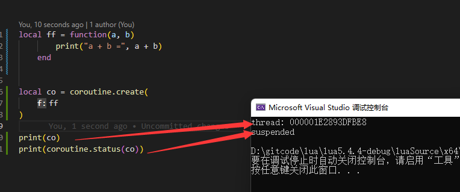
- 我们从
print(co)能看出来在使用coroutine.create的时候其实返回的是一个线程id,这个id就是协程栈的id - 从
print(coroutine.status(co))上能看出刚create出来的协程状态是suspended状态的
接下来我们来追踪源码,一共四步,现在我把每步的栈空间情况画出来分析
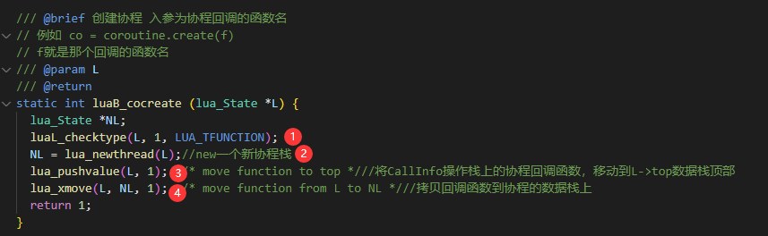
执行1号位置代码的时候堆栈情况
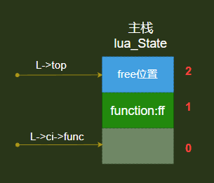
执行2号位置代码的时候堆栈情况,全局栈顶部会push一个新创建出来的协程,新的协程栈这个时候什么都没有
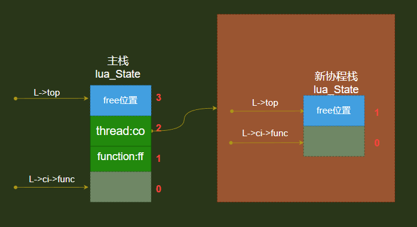
执行3号位置代码的时候堆栈情况,这个时候会把L->ci->func +1指向的位置放到全局栈栈顶
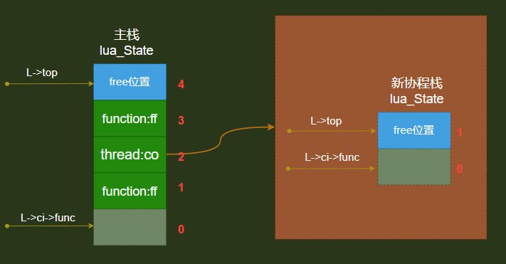
执行4号位置代码的时候堆栈情况,这个时候全局栈的栈顶元素ff会移动到协程栈的顶部
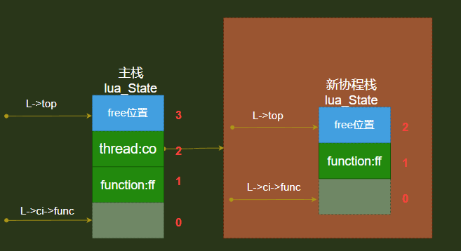
至此一个协程就创建出来了
coroutine.wrap(f)
lua测试代码
local ff = function(a, b)
print("a + b =", a + b)
return a + b;
end
func = coroutine.wrap(ff)
print(func)
local ret = func(10 ,20)--不需要调用 coroutine.resume接口直接就可以运行
print(ret)
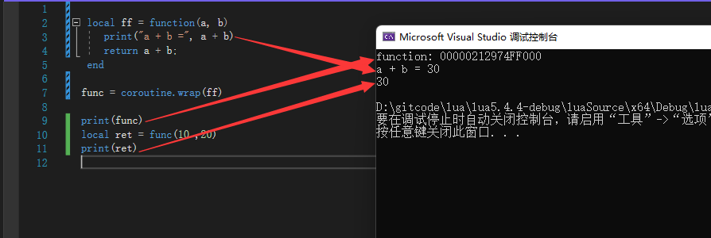
从上图中我们可以看出
- 返回的是一个函数
- 不需要
resume唤醒,直接调用返回的函数就行
我们在看一下源码解释
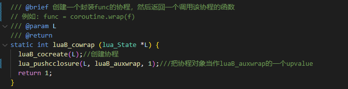
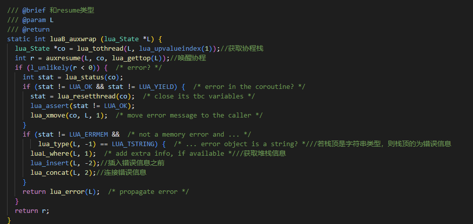
从中我们可以看到,原来wrap只是包装了一层,然后把新创建的协程当做luaB_auxwrap的一个upvalue,进行返回,其他的操作和coroutine.create(f)类似
启动协程
coroutine.resume(co, …)
没有yield的协程的resume
local co = coroutine.create(
function(a, b)
return a,b
end
)
local ret, a ,b = coroutine.resume(co,3)
print(ret, a ,b)
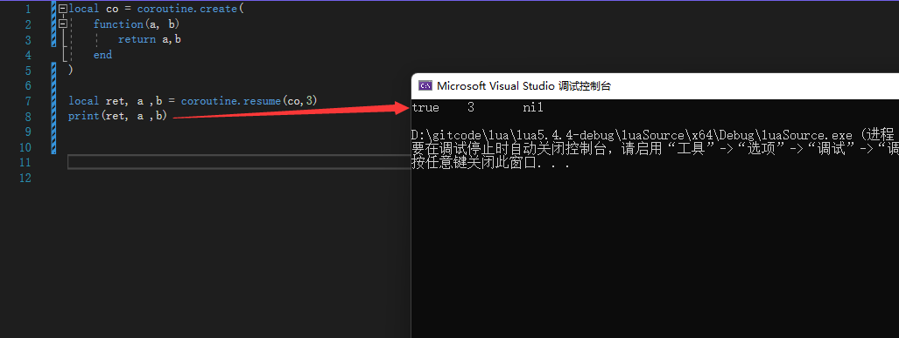
可以看到首先没有yield的协程的resume,返回的就是create里面的函数return的a,b值 来源是resume后面的不定参数,传啥就对应啥,如果不传就默认是nil
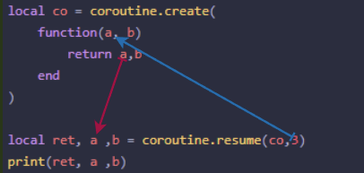
有yield的协程的resume
local co = coroutine.create(
function(a, b)
local c = a +b
print("start yield")
local x,y, z= coroutine.yield(c)
print("restart co", x,y,z)
return x + y + z + c
end
)
local ret, a = coroutine.resume(co,3,4)
print(ret, a)
local ret, a = coroutine.resume(co,30,40,50)
print(ret, a)
local ret, a = coroutine.resume(co,300,400,500)
print(ret, a)
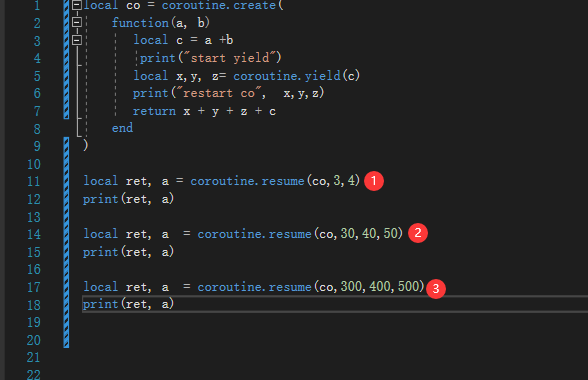
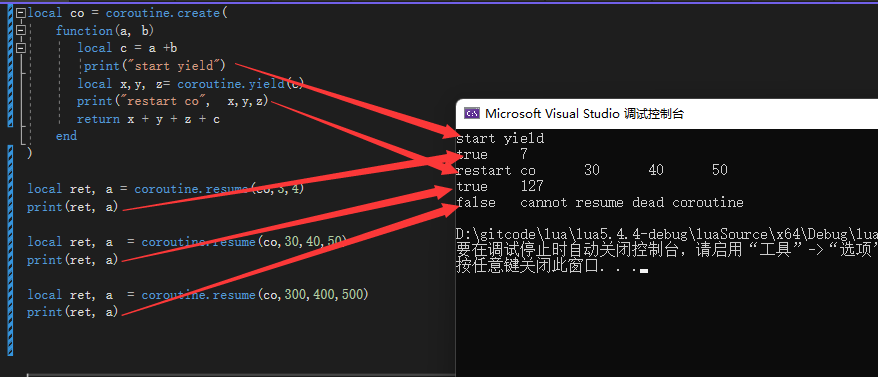
首先我们利用了coroutine.resume创建了一个协程,但是这个协程因为返回的是协程id所以不可能想coroutine.wrap一样直接调用就行,只能通过coroutine.resume来启动
根据上图我们可以分析出
首先在1号位置第一次调用了coroutine.resume把3和4传给了函数的a,b,然后再函数里面遇到了coroutine.yield(c)挂起了函数,并把结果c通过yield形参传给了resume,然后直接下面就print出了true,7
接着来到了2号位置第二次调用了coroutine.resume把30和40,50通过yield的返回值返回给了x,y,z,通过打印print("restart co", x,y,z)也能看出的确是这样的结果
接着来到3号位置,第三次调用了coroutine.resume,这个时候发现print直接输出了false和cannot resume dead coroutine,传递啥参数也不起作用,主要原因是因为当协程完成的时候,或者有错误的时候就会报这个cannot resume dead coroutine错误提示
具体参数传递,大家可以顺着下图线的颜色捋
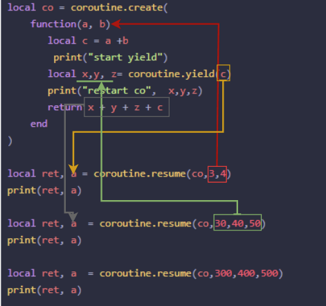
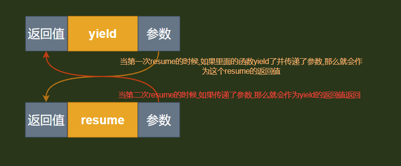
说了这么多,我们从头开始撸,为了方便讲解清楚,方便画流程图,我把create里面的函数用ff进行了保存
当我们调用
local ff = function(a, b)
local c = a +b
print("start yield")
local x,y, z= coroutine.yield(c)
print("restart co", x,y,z)
return x + y + z + c
end
local co = coroutine.create(
ff
)
的时候这个时候堆栈情况是
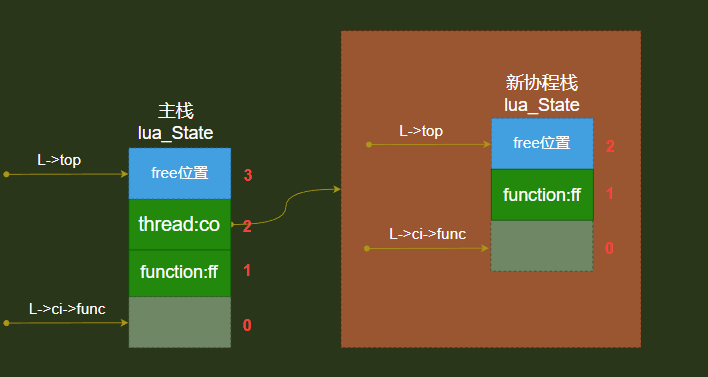
当我们继续调用的时候
local ret, a = coroutine.resume(co,3,4)
我们追踪源码这个时候主要起作用的核心是luaB_coresume函数里面调用的auxresume函数
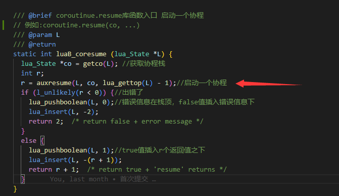
进入auxresume函数以后我们看到主要起作用的是这3个位置
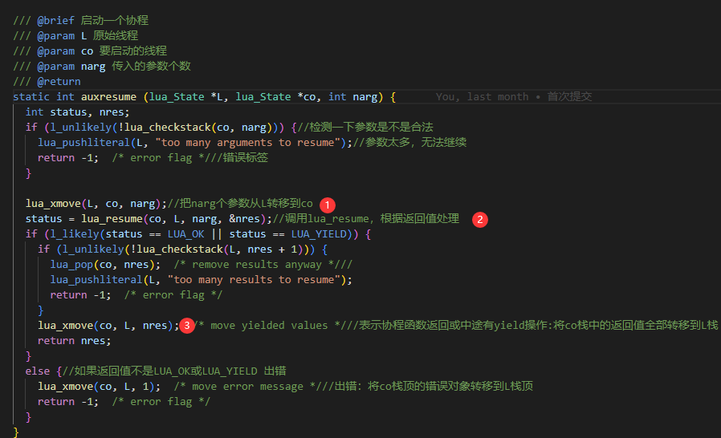
当我们在调用1号位置lua_xmove函数之前我们堆栈情况是这样的
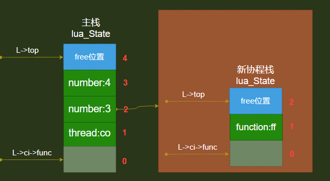
调用lua_xmove函数之后堆栈情况
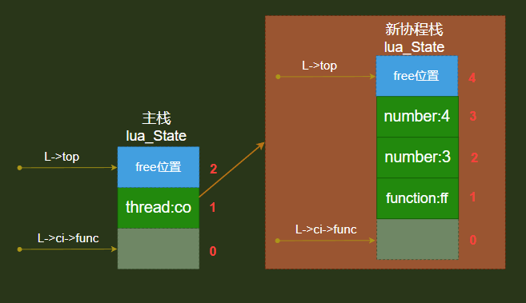
当做完这些准备的时候,我们来到了2号代码位置,尝试用lua_resume来真正唤醒启动一根协程来处理逻辑

可以看到这有3个关键点,
-
1号位置代表当函数执行完成以后,或者发送错误的时候,你这个时候在去调用coroutine.resume,这个时候发现直接输出了false和cannot resume dead coroutine -
2号位置也很重要这是执行回调函数的关键,里面会利用lua_longjmp和setjmp来进行当前环境变量的执行,还有异常抛出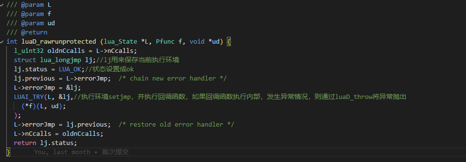
luaD_rawrunprotected执行逻辑整体流程如下-
函数最开始定义一个
lua_longjmp结构体,用于保存当前执行环境,状态值设置为LUA_OK -
然后调用
LUAI_TRY函数,该函数实际是一个宏定义,将当前执行环境setjmp,并执行回调函数 -
如果回调函数执行内部,发生异常情况,则通过
luaD_throw将异常抛出 -
异常抛出函数,会执行
LUAI_THROW函数,该函数是longjmp的宏定义,并且将返回值设置为1 -
由于执行了
longjmp,则C语言内部方法会回到跳转点setjmp -
LUAI_TRY函数判断setjmp的返回值,之前是0,现在由于longjmp设置了值为1,所以不会继续执行回调函数,回调函数被中断
当
luaD_rawrunprotected函数的执行真的抛出异常的时候,这个时候就会调用precover函数进行恢复,这样我们不需要担心调用一个协程后会因为协程内部的错误导致外部的主程序崩溃 -
-
第
3号位置,我们可以看到函数的返回值的情况,其实就是对应了这张图的逻辑处理最后我们得到了从
lua_resume的到的status状态和nres返回值个数的信息以后通过如下代码送到了原始协程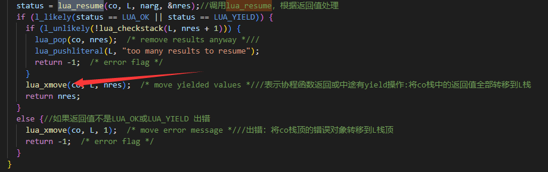
具体堆栈图示情况如下,到此我们的 resume流程就结束了
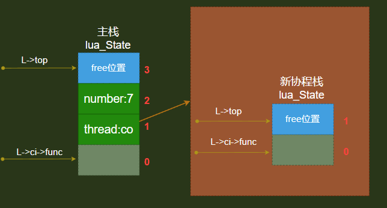
挂起协程
coroutine.yield(…)
挂起协程源码如下
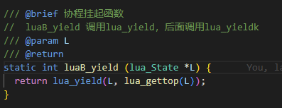
从中我们可以看出主要是lua_yieldk函数在起作用
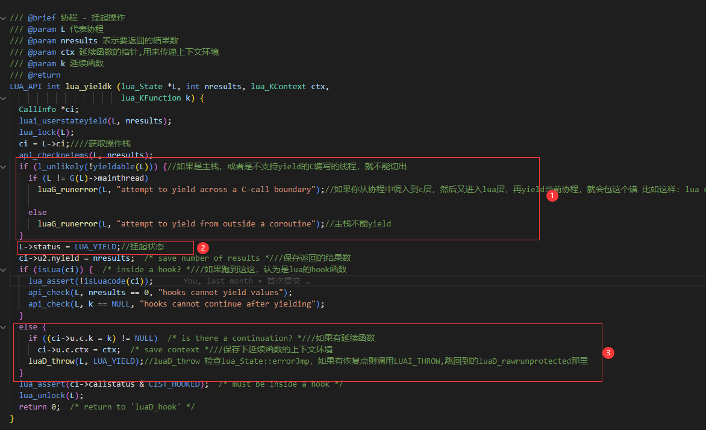
从1号位置我们可以看出
-
主栈不能
yield -
coroutine.resume–>cfunc–>luafunction–>coroutine.yield—–>报错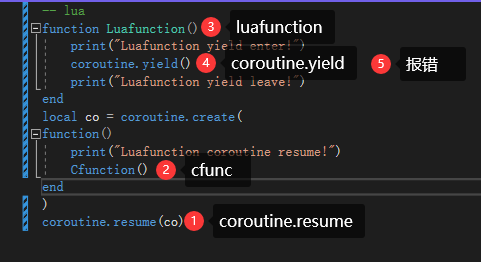
从2号位置我们可以看出当yield的时候状态会被置成LUA_YIELD
从3号位置我们可以看出这里报错了延续函数的上下文,和延续函数,主要是为了解决2号位置发生的报错信息
延续函数
为什么我们需要延续函数呢,主要原因还是因为如下流程
coroutine.resume --> cfunc --> luafunction--> coroutine.yield -----> 报错
当我们从cfunc调用luafunction,然后luafunction调用yield的时候,和协程相关的状态信息都会被保存lua_state中,但是c函数不会因为调用了coroutine.yield而挂起,而是会继续执行下去,c函数执行完成以后也就全部销毁了,也无法保存恢复现场,这样就会导致c层的调用和lua层的调用不一致,lua层挂起,c层执行,这样逻辑代码也会发生错误
比如下面的报错版本
//c层代码 替换main函数的那个文件就行
#include <stdio.h>
extern "C" {
#include <lua.h>
#include <lualib.h>
#include <lauxlib.h>
#include<lstate.h>
}
static void traceback(lua_State* L, int n) {
lua_Debug ar;
if (lua_getstack(L, n, &ar)) {
lua_getinfo(L, "Sln", &ar);
if (ar.name) {
printf("\tstack[%d] -> line %d : %s()[%s]\n", n, ar.currentline, ar.name, ar.short_src);
}
else {
printf("\tstack[%d] -> line %d : unknown[%s]\n", n, ar.currentline, ar.short_src);
}
traceback(L, n + 1);
}
}
static int TraceBack(lua_State* L) {
printf("STACK TRACEBACK: %s\n", lua_tostring(L, -1));
traceback(L, 0);
return 0;
}
static int Cfunction(lua_State* L) {
printf("Cfunction enter!\n");
lua_pushcfunction(L, TraceBack);
lua_getglobal(L, "Luafunction");
lua_pcall(L, 0, 0, -2);
printf("Cfunction leave!\n");//报错版本这里直接往下执行了,并未和lua层一起挂起,导致了和lua层行为不一致
return 0;
}
int main() {
lua_State* L;
int status;
L = luaL_newstate();
luaL_openlibs(L);
lua_pushcfunction(L, Cfunction);
lua_setglobal(L, "Cfunction");
status = luaL_loadfile(L, "helloworld.lua");
if (status) {
printf("loadfile error!(%s)\n", lua_tostring(L, -1));
lua_settop(L, 0);
return 0;
}
status = lua_pcall(L, 0, 0, -2);
if (status) {
lua_settop(L, 0);
return 0;
}
return 1;
}
--lua文件
function Luafunction()
print("Luafunction yield enter!")
coroutine.yield()
print("Luafunction yield leave!")
end
local co = coroutine.create(
function()
print("Luafunction coroutine resume!")
Cfunction()
end
)
coroutine.resume(co)
运行结果
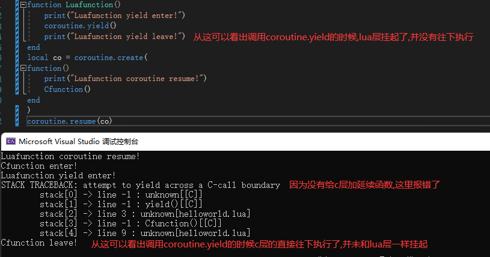
在现在这个版本,通过lua_callk, lua_pcallk, lua_yieldk这些API函数传递了延续函数,然后再调用coroutine.resume的时候能够保证和lua一起保持同步调用,这样就不会报错了
下面我们来看看加了延续函数版本
//c层代码 替换main函数的那个文件就行
#include <stdio.h>
extern "C" {
#include <lua.h>
#include <lualib.h>
#include <lauxlib.h>
#include<lstate.h>
}
static void traceback(lua_State* L, int n) {
lua_Debug ar;
if (lua_getstack(L, n, &ar)) {
lua_getinfo(L, "Sln", &ar);
if (ar.name) {
printf("\tstack[%d] -> line %d : %s()[%s]\n", n, ar.currentline, ar.name, ar.short_src);
}
else {
printf("\tstack[%d] -> line %d : unknown[%s]\n", n, ar.currentline, ar.short_src);
}
traceback(L, n + 1);
}
}
static int TraceBack(lua_State* L) {
printf("STACK TRACEBACK: %s\n", lua_tostring(L, -1));
traceback(L, 0);
return 0;
}
//延续函数
static int cfunctionContinuation(lua_State* L, int status, lua_KContext ctx)
{
printf("Cfunction leave!\n");
return 0;
}
static int Cfunction(lua_State* L) {
printf("Cfunction enter!\n");
lua_pushcfunction(L, TraceBack);
lua_getglobal(L, "Luafunction");
//lua_pcall(L, 0, 0, -2);
lua_pcallk(L, 0, 0, -2, 0, cfunctionContinuation);//这里加了延续函数
return 0;
}
int main() {
lua_State* L;
int status;
L = luaL_newstate();
luaL_openlibs(L);
lua_pushcfunction(L, Cfunction);
lua_setglobal(L, "Cfunction");
status = luaL_loadfile(L, "helloworld.lua");
if (status) {
printf("loadfile error!(%s)\n", lua_tostring(L, -1));
lua_settop(L, 0);
return 0;
}
status = lua_pcall(L, 0, 0, -2);
if (status) {
lua_settop(L, 0);
return 0;
}
return 1;
}
没有第二次调用coroutine.resume唤醒挂起协程的情况
function Luafunction()
print("Luafunction yield enter!")
coroutine.yield()
print("Luafunction yield leave!")
end
local co = coroutine.create(
function()
print("Luafunction coroutine resume!")
Cfunction()
end
)
coroutine.resume(co)
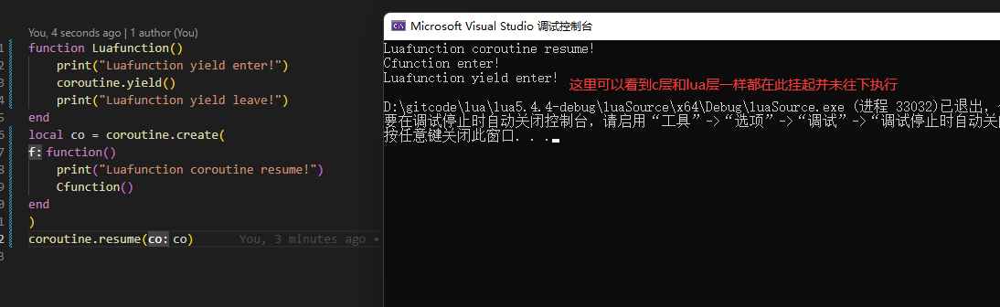
第二次调用coroutine.resume唤醒挂起协程的情况
function Luafunction()
print("Luafunction yield enter!")
coroutine.yield()
print("Luafunction yield leave!")
end
local co = coroutine.create(
function()
print("Luafunction coroutine resume!")
Cfunction()
end
)
coroutine.resume(co)
coroutine.resume(co)--第二次调coroutine.resume
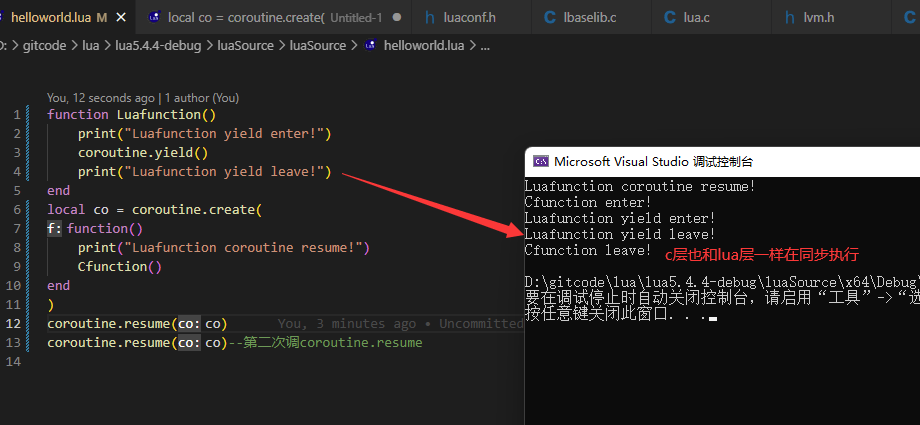
具体源码核心代码主要是这几个地方
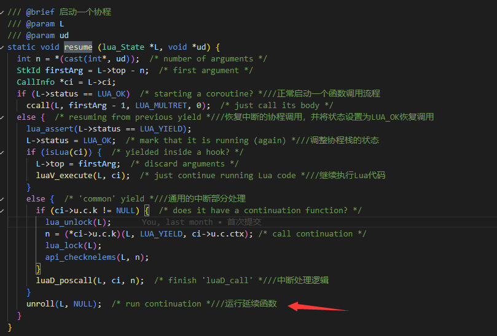
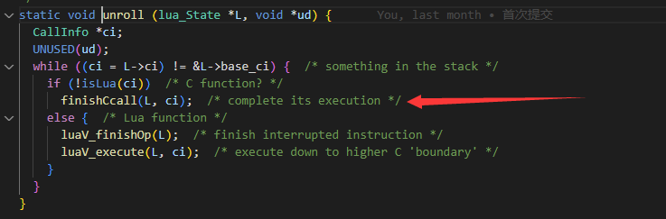
关闭协程
coroutine.close(co)
关闭协程 co,并关闭它所有等待 to-be-closed 的变量,并将协程状态设为 dead
具体源码如下
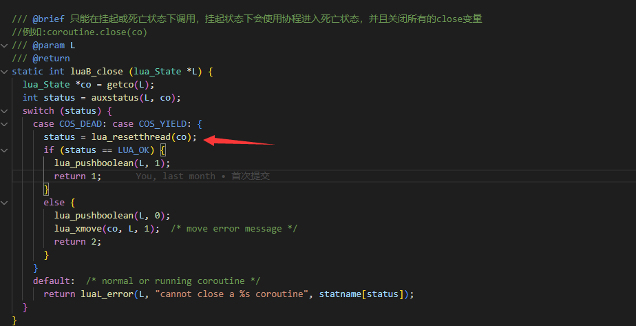
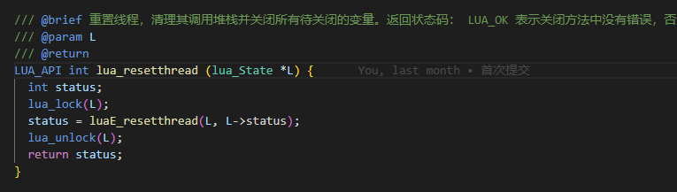
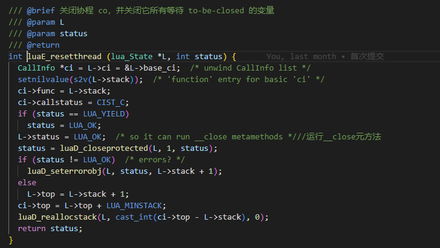
返回协程
coroutine.running()
返回当前正在运行的协程加一个布尔量. 如果当前运行的协程是主线程,其为真.
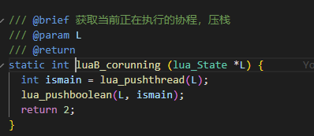
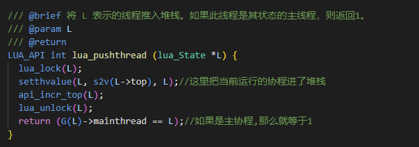
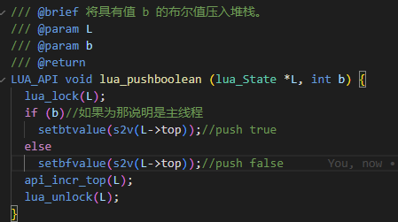
获取协程状态
coroutine.status(co)
以字符串形式返回协程 co 的状态.
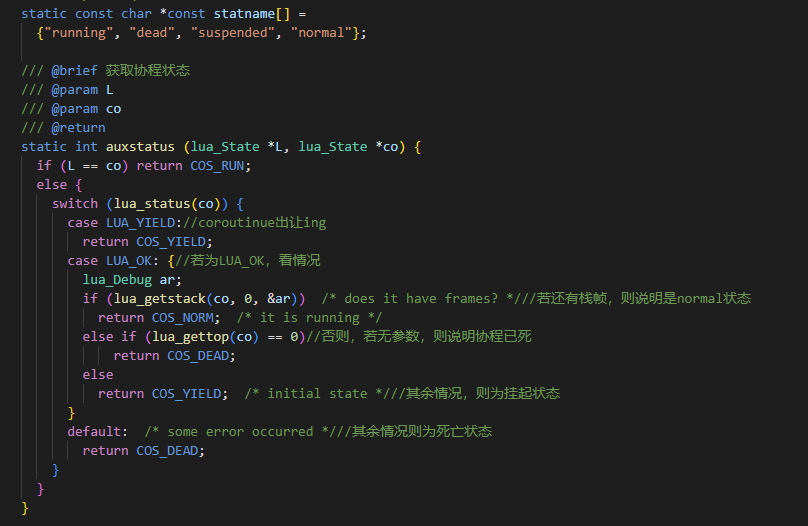
具体情况4中
| 状态 | 解释 |
|---|---|
| running | 运行 |
| dead | 死亡 |
| suspended | 挂起 |
| normal | 正常 |
协程是否可以让出
coroutine.isyieldable(co)
如果协程 co 可以让出，则返回真。co 默认为正在运行的协程。
主要是靠这个宏来判断
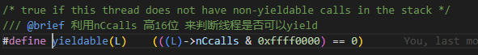
更详细的注释请去我的GitHub地址
以下是我几乎每行都加了注释的GitHub地址
-
lcorolib.c注释地址